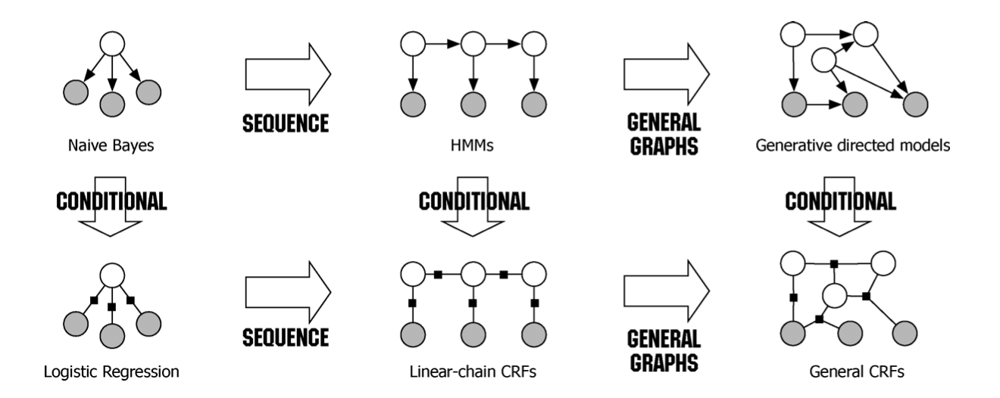

这一篇主要来讲条件随机场CRF的原理, 即模型结构, 推断问题以及学习问题, 会比较硬核一些.
CRF的原理
Log-linear model
为什么这里会说到log-linear model呢, log-linear model 又是啥呢ヽ(✿ﾟ▽ﾟ)ノ
有木有想过一个问题, 为什么HMM是有向图生成模型, 为什么CRF是无向图判别模型, 有向图与生成, 无向图与判别, 是否有什么联系呢? 是否生成模型一定要拿有向图来做, 判别模型一定要拿无向图来做呢? 答案是否定的, 但是用对了姿势后, 很多东西就会显得比较自然. 一下是我个人的一些理解, 不一定对.
仍然还是这张图:

在处理非序列数据时, 作为生成模型, 即优化联合概率$P(X,Y)$的朴素贝叶斯模型, 如果在假设中的$X$是序列, 然后将”朴素”变为马尔科夫, 会怎么样呢? 根据概率展开的链式法则, 会得到:
这个形式, 不就与有向图的概率分布类似吗, 因此在由生成模型的朴素贝叶斯, 序列化后, 使用有向图作为模型的结构, 是很自然的做法.
同理, 作为判别模型的逻辑回归$P(Y|X)$, 本质上, 是一个log-linear model的特例, log-linear model的标准形式为:
之所以叫做”log-linear”, 其实就是因为取$\log$后会变成线性模型.
再联系前面所述的无向图的联合概率的表示, 有没有发现和上面第二个等式后的形式类似呀. 所以, 在从判别模型的逻辑回归, 经过序列化后, 采用无向图来作为模型的结构, 也是很自然的做法.
因此, CRF的具体的概率公式为:
具体的含义与推导, 在后文中会详细讲述.
整体理解
我想很多刚接触CRF的同学, 一来就看到一大堆各种理论与公式, 八成会灵魂三问, 我是谁, 我在哪, 我要做什么?
所以我认为在推导具体的数学公式之前, 先用少量的公式, 结合比较具体的, 简单的栗子, 来展示CRF的用法, 是一件有必要的事情. 在众多的资料中, 我认为李宏毅老师对于CRF的讲解是很好的, 这部分的内容多数参考了他的课程.
前面说了, CRF属于无向图判别模型, 结合上面所讲的log-linear model, 将其中的$X, Y$换成序列, 对应的无向图联合概率可以用如下数学公式描述:
其中的$R$表示归一项, 是一个常数; $w$表示权重系数向量, 是模型参数; $\phi(Y,X)$是关于该无向图的特征向量, 那么条件概率为:
上面的$Z(X)$是条件概率的归一项, 与给定的$X$和$w$有关.
我们知道$\exp (w\cdot\phi(Y,X))$这一项, 表示一个无向图的分数, 但是为什么要写成这样的形式呢? 可以联系HMM得到答案, 在HMM中, 联合概率分布的对数可以简易地表示为:
将该公式进行改写, 转移概率部分改写如下:
发射概率部分改写如下:
也就是说, 将原本按时间顺序求和的形式, 转变为了对所有模式求和的形式, 其中的$N$为整数, 表示当前$X,Y$中, 出现该模式($y\to y’$或$y\to s$)的次数.
由于改写后, 是对不同的特征模式进行求和, 因此每一个子项, 代表了一种独特的模式, 所以可以将$\log P$和$N$分别用向量来表示, 最终结果为两个向量的内积, 即:
这就和CRF的公式联系了起来, 但是还有一个问题需要注意, 在HMM中$w$等同于条件概率$\log P$, 但在CRF中, $\exp(w)$可能大于1, 这是由于两者本质上一个属于有向图, 一个属于无向图引起的, 所以CRF还有一个归一项$R$:
上面中说的$\phi(Y,X)$就是CRF的特征, $w$就是参数. 那么$\phi$是否一定要取和HMM类似的呢? 是不用的哦, 取和HMM类似的特征, 属于比较简单的CRF, 此外也完全可以取其它各种各样的特征, 比如HMM仅考虑当前状态节点和当前观察节点的关系, 在CRF中, 还可以考虑当前状态节点与前一个观察节点的关系等.
不过虽然理论上可以设计各种不同的复杂特征, 但是存在的问题是, 设计的特征越复杂, 在进行推断或者学习的时候, 就越困难.
推断问题
对于推断问题来说, 就是给定CRF的模型参数$w$和观察序列$X$, 求解目标序列$Y$. 这里的一个难点是, 对于条件概率分布$P(Y|X;w)$, 要对所有可能的$Y$进行计算, 使用暴力法肯定是不行的, 需要使用动态规划的算法.
其中, $F_j(Y,X)=\sum_{t=2}^Tf_j(y_{t-1},y_t,X)$, $f_j(y_{t-1},y_t,X)$表示第$j$个特征模式是否在$(y_{t-1},y_t,X)$中存在, 是则为1, 否则为0.
同时最后转换成按时间步求和的形式, 这很重要, 这为运用动态规划算法做准备:
接下来, 再假设一个函数$h(k,v)$, 表示从$t=2$到$t=k$, 且第$k$个状态节点为$v$时, 最大的$\sum_{t=2}^kg_t(y_{t-1},y_t,X)$, 并由此可以得到其递推公式:
这样, 最后得到一系列的$h(T,v)$, 选取最大的一个对应的$Y$, 作为最优结果返回即可.
学习问题
现在已经知道了怎么解决推断问题, 下面进一步来看参数学习的问题.
不同于HMM根据情况既可以使用监督学习的极大似然来做, 也可以使用EM算法来做, CRF只能使用监督学习的方法.
主要的思路是利用梯度下降法, 即要对每个参数$w_j$求偏导, 难点是涉及到配分函数, 即归一化项.
下面来进行推导:
对参数$w_i$求偏导:
以上就是对数条件概率求偏导的结果, 其结果可以看做是若该特征模式在本条样本中出现较多, 而在其它可能的$Y’$中出现较少, 则增加$w_i$, 反之亦然.
现在的关键是$Z(X,w)$, 下面利用动态规划来进行计算:
那么类似HMM那里的前向法, 设定一个函数$\alpha(k,v)$, 表示在$t=k$时状态节点为$v$的上面公式的和$\sum_{Y’}\exp \sum_{t=2}^kg_t(y_{t-1},y_t,X)$, 对应的递推公式为:
由此, 最后可以通过对所有的$\alpha(T,v)$求和, 得到$Z(X,w)$.
如果利用后向法, 则可以设定一个函数$\beta(k,v)$, 表示在$t=k$时状态节点为$v$的上面公式的和$\sum_{Y’}\exp \sum_{t=k}^Tg(y_{t-1},y_t,X)$.
这样, 配分函数可以利用前向函数和后向函数进行表示:
在有了以上的结果后, 进一步改写求偏导的公式:
是的, 上面就是最终可以通过动态规划, 得到的最终的对数条件概率$\log P(Y|X;w)$对参数$w_i$求偏导的结果. 有了这个结果, 再使用梯度下降法就可以进行学习了.
CRF与其它模型
CRF与HMM
在前面的文章中讲解HMM时, 就提到过HMM由于其模型本身的假设, 导致其存在一些问题, 其中相对而言比较严重的问题是, HMM只是让已知的正确序列的联合概率变大, 但不能保证正确序列的联合概率大于其它序列的联合概率, 即:
但是CRF可以很大程度上解决这个问题, 通过CRF学习过程中, 参数更新的公式就可以看出, CRF在更新参数$w$时, 若正确(存在)序列中有对应特征, 则$w$增加, 若错误(不存在)序列中有对应特征, 则$w$减少. 通过调整$w$, CRF可以尽可能地保证$P(Y,O)\ge P(Y’,O)$.
此外, CRF模型的复杂度, 可以根据特征的设计而调整, 若同样设计序列$Y$的马尔科夫转移特征, 以及序列$Y$与$X$之间的发射特征, 那么CRF与HMM就非常相似, 这是上文中也提到的.
作为判别模型的CRF, 相比生成模型的HMM, 虽然不能模拟数据分布, 生成序列样本, 但是通过有监督学习获得的模型参数, 一般也可能让CRF获得更好的表现.
CRF与RNN
这里与其说比较CRF与RNN, 不如说以它们作为代表模型, 比较经典序列模型(如HMM, CRF, Structured Perceptron等), 与深度学习序列模型(如RNN, LSTM, GRU).
那么经典序列模型, 相比深度学习序列模型, 有哪些优点呢? 我认为可以有如下一些优点:
* 利用动态规划算法, 考虑到了整个序列的信息, 而一般的RNN只能考虑单向信息(BiLSTM一定程度上可以考虑双向信息).
* 想学习和推断时, 除了考虑特征序列$X$, 也会考虑目标序列$Y$, 学习目标序列$Y$的内在模式, 会在所有可能的目标序列$Y$中, 挑选出最优解. 而类RNN模型, 在学习和推断时, 是没有考虑到目标序列$Y$的内在模式的, 仅仅学习了$X$与$Y$的关系, 这样在一些时候, 可能会推断出一些明显不合理的结果.
* 由于基于统计理论, 随着优化的进行, 可以保证模型的表现确实是会逐渐变好. 但是深度学习模型在这里并不能保证随着损失函数的优化, 模型表现总是会变好.
再说深度学习序列模型的优点:
* 模型学习与表达能力强, 在数据足够多的时候, 可以获得很好的表现.
说了这么多, 如果单独分别用经典序列模型与深度学习序列模型进行建模, 谁的表现好呢? 不出意外是深度学习序列模型Ｏ(≧口≦)Ｏ
纳尼???扯了这么多, 然后还是深度学习模型厉害Σ(っ °Д °;)っ
那我们为什么还要费这么大劲学这堆过时的玩意（╯‵□′）╯︵┴─┴
来跟我一起大喊: 深度学习, 永远滴神!
其实…还是有用的, 虽然单独拿出来, 是深度学习模型占优, 但是经典序列模型的优点也是确实存在不能忽视的. 所以, 一种比较好的做法是, 将两者进行结合, 比如利用Bi-LSTM+CRF的结构, 能够同时获得两类模型的优点, 获得更好的性能, 这个将会在下一篇中进行讲解.